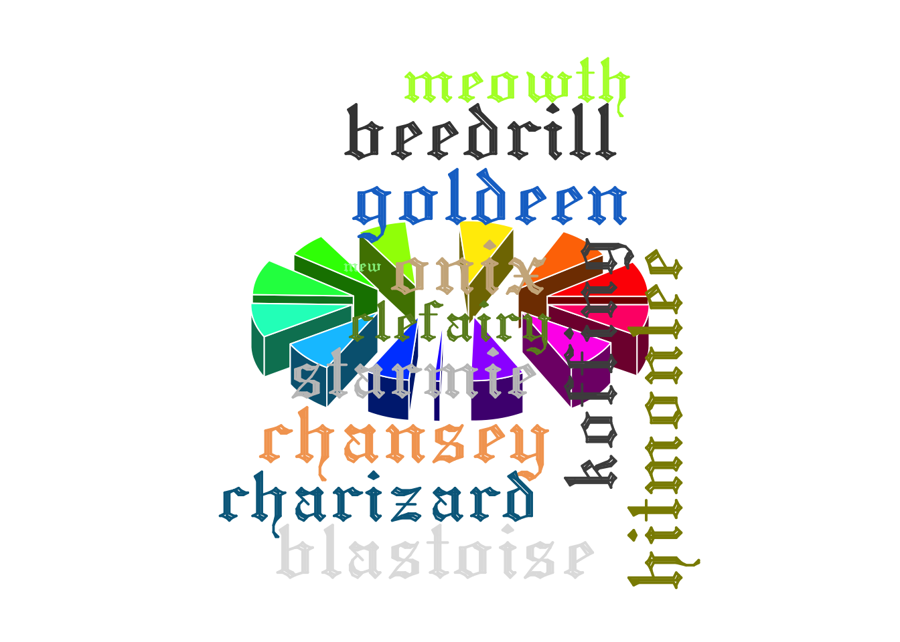

remotes::install_github("matt-dray/dray")tl;dr
Multiple visualisation ‘wrongs’ come together to make a new and powerful ‘right’ way to visualise text data, lol.
The pinnacle of visualisation
Great news everyone: I’ve taken the best of two stellar data visualisations and smashed them together into something that can only be described as perfection.
Let me set the scene. There’s three things we can agree on:
- Everyone loves pie charts, particularly when they’re in 3D, exploded and tilted.
- Word clouds aren’t at all overused.
- I have too much time on my hands.
With that in mind, I’ve artfully melded clouds and pies into the function cloud_pie(), which I think sounds rather sweet.
You can find the function in my personal package {dray}, which I made following Hilary Parker’s excellent ‘Writing an R Package from Scratch’ blogpost.
Pie in the sky
cloud_pie() depends on the {plotrix} and {wordcloud} packages and takes three arguments:
data: summary dataframe with two columns: categories, and counts for those categoriesname_col: column containing the category namescount_col: column containing the counts for each category
data must be a dataframe with a column of categories (i.e. name_col) and a column of count values associated with those categories (i.e. count_col).
It’s also completely untested and will probably break if you actually try to use it. So let’s try to use it.
Pokémon data, of course
Let’s use the same data as in the Pokéballs in Super Smash Bros blog post, which is hosted on GitHub.
library(dplyr, warn.conflicts = FALSE)
pkmn_raw <- read.csv(
"https://raw.githubusercontent.com/matt-dray/draytasets/master/ssb_pokeballs.csv"
)
pkmn_summary <- pkmn_raw %>%
group_by(pokemon) %>%
count() %>%
ungroup()
glimpse(pkmn_summary)Rows: 13
Columns: 2
$ pokemon <chr> "beedrill", "blastoise", "chansey", "charizard", "clefairy", "…
$ n <int> 26, 25, 26, 23, 18, 26, 25, 24, 20, 3, 25, 26, 23The big reveal
Accept your fate.
dray::cloud_pie(
data = pkmn_summary,
name_col = "pokemon",
count_col = "n"
)Warning in wordcloud(words = data[[name_col]], freq = data[[count_col]], :
snorlax could not be fit on page. It will not be plotted.
Did I forget to mention that the typeface is gothic and colours are selected randomly from the named colours that R knows about? The words and pie slices are sized by frequency and match up by colour. Sensational.
Oh, and, haha, sometimes the wordcloud will miss out some words if they don’t fit nicely. Doesn’t matter: people will be so overawed by the plot’s overall beauty that they won’t notice a few missing values, amirite.
You know what to do
Let me know if you decide to nominate me for an Information is Beautiful award.
Environment
Session info
Last rendered: 2023-08-24 20:40:15 BSTR version 4.3.1 (2023-06-16)
Platform: aarch64-apple-darwin20 (64-bit)
Running under: macOS Ventura 13.2.1
Matrix products: default
BLAS: /Library/Frameworks/R.framework/Versions/4.3-arm64/Resources/lib/libRblas.0.dylib
LAPACK: /Library/Frameworks/R.framework/Versions/4.3-arm64/Resources/lib/libRlapack.dylib; LAPACK version 3.11.0
locale:
[1] en_US.UTF-8/en_US.UTF-8/en_US.UTF-8/C/en_US.UTF-8/en_US.UTF-8
time zone: Europe/London
tzcode source: internal
attached base packages:
[1] stats graphics grDevices utils datasets methods base
other attached packages:
[1] dplyr_1.1.2
loaded via a namespace (and not attached):
[1] vctrs_0.6.3 cli_3.6.1 knitr_1.43.1 rlang_1.1.1
[5] xfun_0.39 gifski_1.12.0-1 generics_0.1.3 jsonlite_1.8.7
[9] dray_0.0.0.9000 glue_1.6.2 htmltools_0.5.5 wordcloud_2.6
[13] fansi_1.0.4 rmarkdown_2.23 evaluate_0.21 tibble_3.2.1
[17] fastmap_1.1.1 yaml_2.3.7 lifecycle_1.0.3 compiler_4.3.1
[21] RColorBrewer_1.1-3 Rcpp_1.0.11 htmlwidgets_1.6.2 pkgconfig_2.0.3
[25] rstudioapi_0.15.0 digest_0.6.33 R6_2.5.1 tidyselect_1.2.0
[29] utf8_1.2.3 pillar_1.9.0 magrittr_2.0.3 tools_4.3.1
[33] plotrix_3.8-2 Reuse
CC BY-NC-SA 4.0